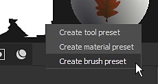
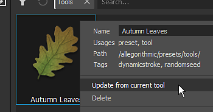

Use the Properties window to tweak brush parameters, then save the brush configuration as a preset for quick re-use in the future.
With the Path tool equipped, a Presets section is available in the Properties panel where you can quickly access Path related presets. You can also add path presets to your favorites. Learn more about managing your favorite path presets here.

Presets can be created by right clicking in the Properties window when Tool properties are available (paint layer or paint effect).
Right-click in the Properties window to open a context menu with the following options:

It is possible to update an existing preset based on the current values in the Properties window. Right-click on the asset in the Assets window and select "Update from current tool" to update the preset.